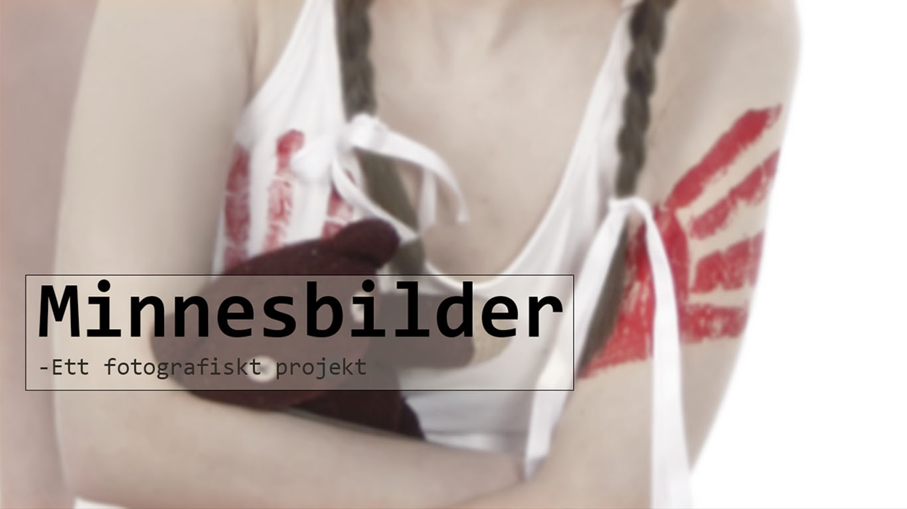

Vad är “Minnesbilder”?
Denna hemsida är en digital utställning av fotoprojektet ”Minnesbilder”.
Detta fotografiska projekt består av 3 bilder som representerar olika händelser och känslor. Syftet med projektet är att spegla känslor samt låta åskådarna tolka fotografierna utifrån de känslorna bilderna väcker.
Fotografierna kan finnas under fliken ”Galleri”, där finns även olika tolkningar av bilderna gjorda av mig och diverse elever.
Information kring mina samarbetspartners kan finnas under fliken ”Samarbete”
Information om mig och arbetet kan finnas under fliken ”Info”
Stöd och hjälp om du eller någon du känner är i en utsatt på position kan finnas under fliken ”Stöd”